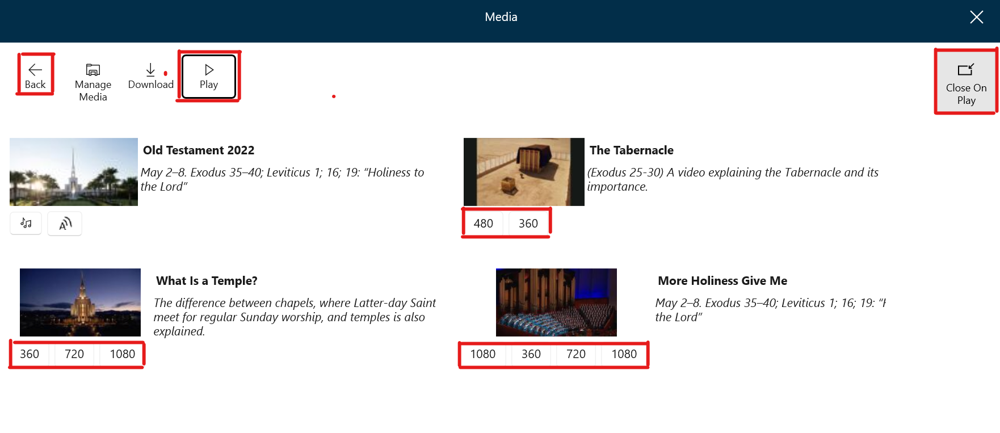

Much of the Gospel Library content has video and/or audio media content available. This media content can be either played on Gospel Library or downloaded (to be played later on Gospel Library or another Windows app). Downloaded media can be played later without a reliable internet connection.
This chapter will explain (1) how to play audio media, (2) how to play video media, (3) how to download audio and video media and (4) how to manage downloaded media.
Navigate to the desired content item. Two buttons will appear at the top right corner of the screen.
The display of these two buttons may be disabled. This change can be made from Settings-Appearance *Show Media Buttons" toggle switch."
To play the audio content, click the Audio button. You will then see the Audio Control panel.
The audio control panel includes the following buttons.
| Volume | The volume button changes the playback volume. | |
| Read Along | The read along button makes the text automatically scroll with the audio to make it easier to follow the text. | |
|
Continuous Play | When the continuous play button is on, the player will automatically start the next chapter or talk. |
| Skip Backward | The skip backward button backs up the playback 10 seconds. | |
| Pause Play | The pause play button pauses the playback and then resumes it. | |
| Skip Forward | The skip forward button moves the playback forward 30 seconds. | |
| Playback Speed | The playback speed button gives you control to speed up or slow down the playback. | |
| Cast to Device | The cast to device button makes it possible to play on a different device. |
Some audio content is available in male, female and computer generated voices. To access those choices, click the Media tab at the top of the screen. If the Media tab is not seen click the Minimize Screen button at the top right of the screen or the ESC key on your device.
Navigate to the desired content item. There are two ways to access video playback. (1) click the Video/Download Button on the Content Item screen as shown below.(2) Click the Media tab at the top of the screen. Both will open the Media Screen.
Note below that the Media screen contains all of the audio and video files used in the Content Item. This section covers only video playback.
To play a video push the Play button at the top of the screen, then select the desired resolution under the picture. (e.g. 360 720 1080) The small numbers provide faster download time with less resolution. The higher numbers provide slower download time and better resolution. If resolution options are not available click on the picture.
The media screen has two other buttons related to video play. The Close On Play button will determine if the media screen closes when a video starts playing. The Back button returns to the previous screen.
Some playback may be accessed directly from controls visible in the content.
The video control panel includes the following buttons.
| Volume | The volume button changes the playback volume. | |
| Read Along | The read along button makes the text automatically scroll with the audio to make it easier to follow the text. | |
|
Continuous Play | When the continuous play button is on, the player will automatically start the next chapter or talk. |
| Skip Backward | The skip backward button backs up the playback 10 seconds. | |
| Pause Play | The pause play button pauses the playback and then resumes it. | |
| Skip Forward | The skip forward button moves the playback forward 30 seconds. | |
| Playback Speed | The playback speed button gives you control to speed up or slow down the playback. | |
| Save | The save button permits you to save the video file to storage. | |
| Aspect Ratio | The aspect ratio button switches between two different aspect ratios to either show the entire image or fill the screen. | |
| Cast to Device | The cast to device button makes it possible to play on a different device. | |
| Full Screen | The full screen button remove ribbons and shows the image on the full screen. This mode is often preferred for presentations. |
Downloading media makes the media content accessible by Gospel Library when there is no internet available for playback. It can be also helpful when the internet bandwidth is limited or expensive. A downloaded media file is in a standard format that can be played by other Windows programs. It is recommended to download any file that is going to be used in a lesson or other presentation.
To download a media item, navigate to the desired content item and open the media screen. There are two ways to open the media screen. (1) Click the Video/Download Button on the Content Item screen as shown below.(2) Click the Media tab at the top of the screen.
From the Media Screen, click the Download button.

Select the item to download and click on the desired format: voice selection for audio files and resolution for video files. If there are no options presented under the picture, there are no media files attached to the selection.
Select the item to download and click on the desired format: voice selection for audio files and resolution for video files. The SaveAs screen will open. You can then navigate and store the file to any desired location on the computer.
Press the Save button to complete the download.
Once a file has been downloaded, it can be played directly from the computer using the GLW program. The Downloaded Media screen directly supports playback of the downloaded files. This screen contains all of the media currently downloaded in GLW.
To open the Downloaded Media screen press the Media tab. It will either take you to the Media screen or the Downloaded Media screen. If the Media screen opens, press the Manage Media button and the Downloaded Media screen will open.
On the Downloaded Media screen, each media file has an associated picture and under the pictures are buttons to play or delete the file.
Audio files contain an audio symbol (). It is not a button. Video files do not contain the audio symbol.
The controls on the top of the pane are described as follows:
There are 2 playback methods.
There are two additional buttons attached to each downloaded file.
 ) opens the page from which the media was originally downloaded. Although the media can be played from the source page, it may played from the internet instead of from the downloaded file.
) opens the page from which the media was originally downloaded. Although the media can be played from the source page, it may played from the internet instead of from the downloaded file.The buttons in the top left corner allow you to manage the appearance of the Downloaded Media screen.
| Switch View | Switches between views with the pictures and views without pictures.. |
| Sort by Most Recent | Sorts with the latest download first (default sort). |
| Sort by Name | Sorts downloads alphabetically A-Z.. |
| Close player | Closes the media player. The control shows only after the player is opened. |
| Filter Box (defalult value ALL) | Opens a pull-down menu to filter downloads by collection (e.g. All, Music, Scriptures, Come Follow Me, General Conference). |